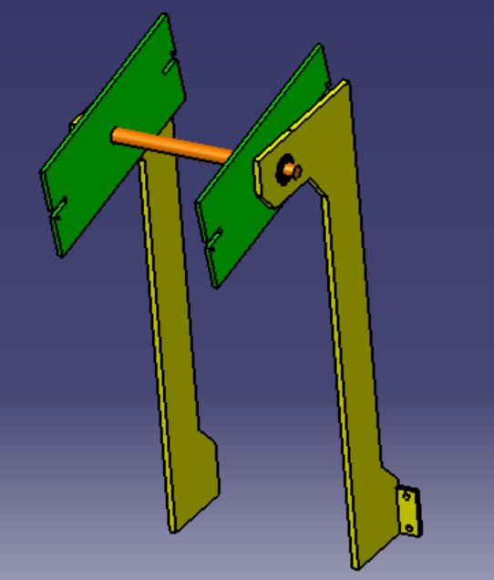
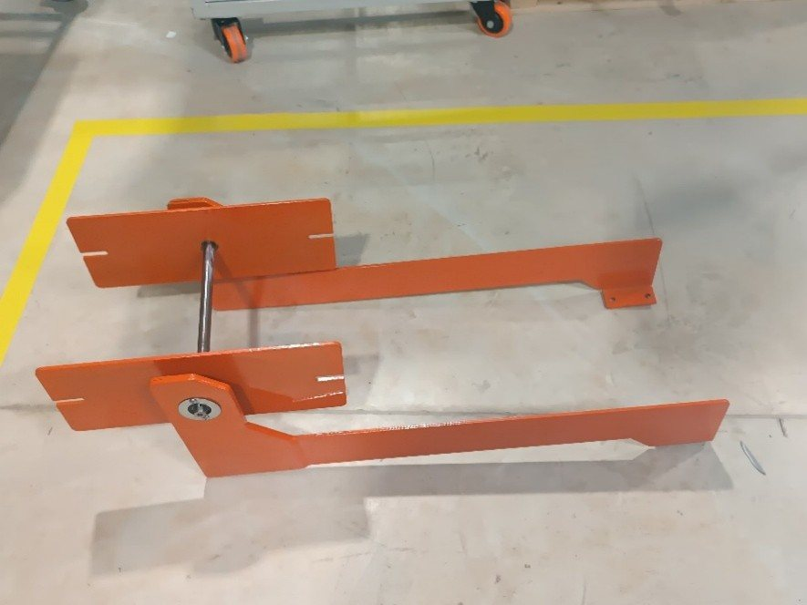

Travaux réalisés — Gentherm
Plans de fabrication, rendu 3D et prototype du support double bobine.
Plans techniques
Assemblage final
Plan d’assemblage final du support double bobine.
Axe de rotation
Plan technique de l’axe de rotation.
Base du support
Plan technique de la base du support.
Support secondaire
Plan technique du support secondaire (axe de bobine).
Rendu 3D et prototype



